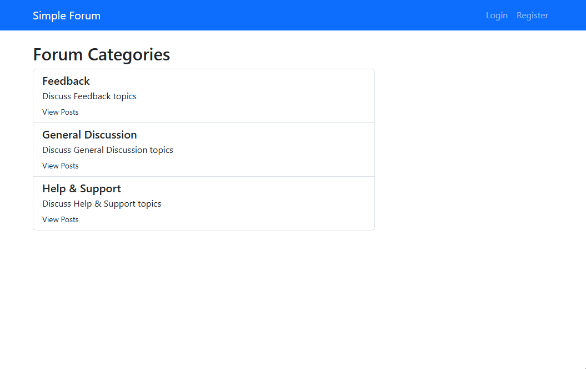
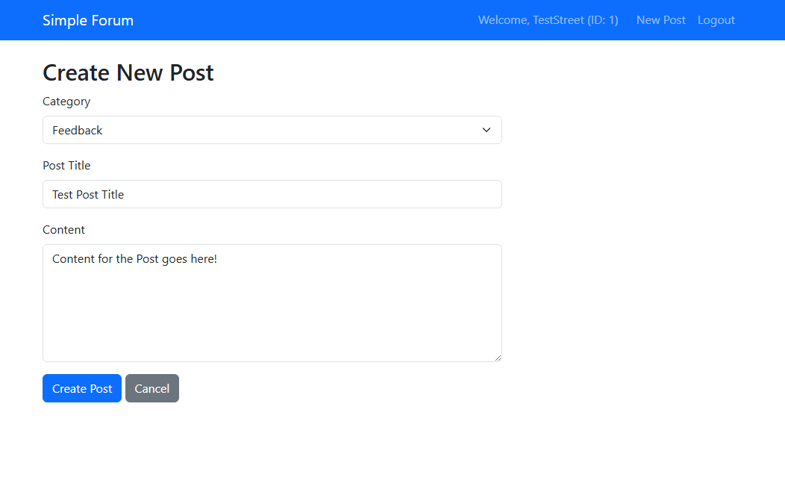
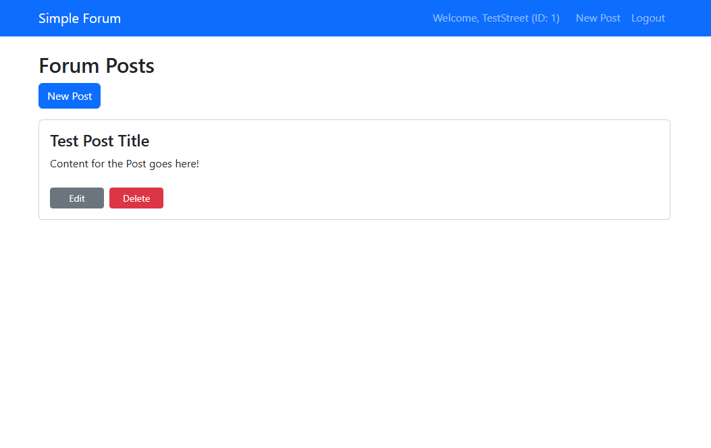

The Simple Forum Application is a dynamic PHP/MySQL forum site built for CIS 241. The project demonstrates a database-backed web application where users can register, log in, browse forum categories, create posts, edit posts, and delete posts. The application uses PHP for server-side logic, MySQL/MariaDB for persistent data storage, PDO for database access, and Bootstrap for basic page styling.
This project is externally hosted because GitHub Pages only supports static pages and does not run PHP or MySQL. The hosted version demonstrates the actual working database functionality required for the portfolio rubric.
password_hash() functionpassword_verify()This sample shows the post update function from the project. It uses a prepared SQL statement with bound values to safely update a forum post in the database.
function update_post($id, $title, $content) {
global $db;
$query = 'UPDATE posts
SET title = :title,
content = :content
WHERE id = :id';
$statement = $db->prepare($query);
$statement->bindValue(':title', $title);
$statement->bindValue(':content', $content);
$statement->bindValue(':id', $id, PDO::PARAM_INT);
$success = $statement->execute();
$statement->closeCursor();
return $success;
}This function represents the main database pattern used throughout the application: prepare the query, bind user-provided values, execute the statement, and close the cursor.



Try the app live here! Create an account, log in, and explore the forum functionality.